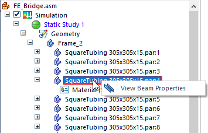

Display a beam cross section
-
In the Frame environment, on the Simulation pane, expand the Geometry node.
-
Right-click a frame component for which you want to display the beam cross section and select the View Beam Properties command.

-
Use the Beam Properties dialog box to review beam properties for a beam cross section to understand the results of a frame model analysis. For more information, see Beam properties.
Solid Edge Simulation displays the stress recovery points that are calculated by Femap. In Femap, you can modify the stress recovery and reference points on the cross section:
-
In the Stress Recovery section of the Cross Section Definition dialog box.
-
In the Stress Recovery section of the Define Property dialog box.
The following image shows the stress recovery points as they are labeled and referenced in Femap.

Refer to the Femap help for more information.